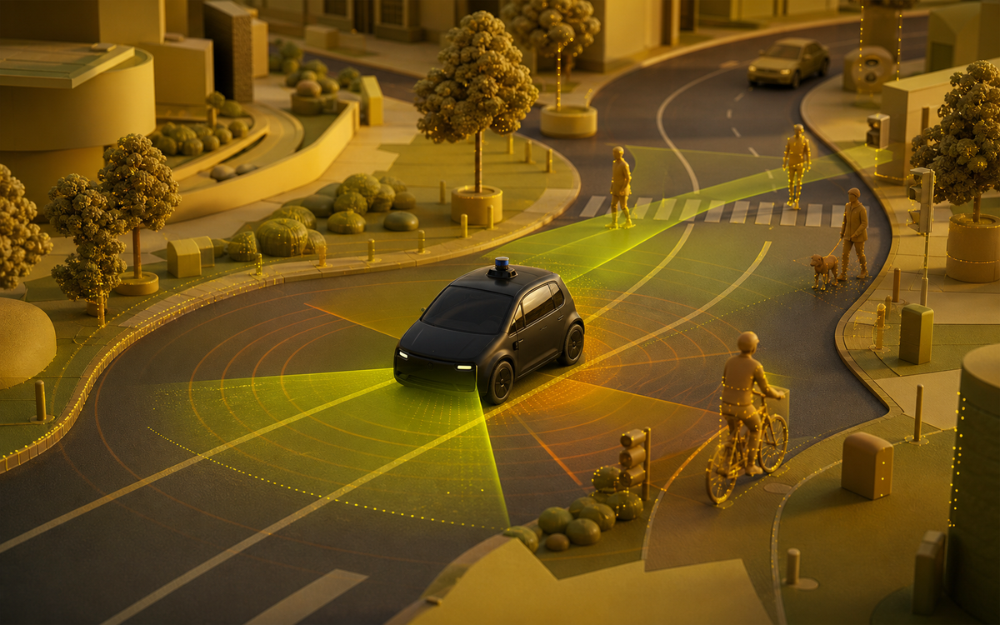

Fahren unterstützen
Einparkhilfen, Notbremsassistenten oder Spurwarnungen können Fahrerinnen und Fahrer in einzelnen Situationen unterstützen.
Anwendung 06 · Zukunft
Kameras, Radar und andere Sensoren beobachten die Umgebung. KI hilft dabei, Spuren, Fahrzeuge und Gefahren zu erkennen – unter sehr hohen Sicherheitsanforderungen.

Im Alltag genutzt
Viele Menschen nutzen schon Fahrerassistenz, etwa beim Einparken oder Bremsen. Vollständig autonome Fahrdienste gibt es nur in bestimmten Regionen – sie zeigen aber, wie sich Mobilität im Alltag verändern könnte.
Einparkhilfen, Notbremsassistenten oder Spurwarnungen können Fahrerinnen und Fahrer in einzelnen Situationen unterstützen.
In einigen US-Städten lassen sich autonome Fahrzeuge per App für Wege zur Arbeit, zum Einkauf oder zum Termin buchen.
Auf öffentlichen Straßen müssen Systeme außergewöhnliche Situationen sicher bewältigen. Deshalb gelten hohe Anforderungen und klare Grenzen.
So zeigt es sich im Alltag
In Regionen mit Robotaxi-Angebot wird ein Fahrzeug wie ein anderer Fahrdienst bestellt.
Fahrgäste sehen die Strecke und können bei Fragen über die App oder im Fahrzeug Hilfe anfordern.
Solche Dienste sind nicht überall verfügbar und ersetzen keine Aufmerksamkeit für Verkehr und Sicherheit.
Praxisbeispiel aus der Realität
Waymo berichtet über Fahrten zur Arbeit, zum Einkaufen oder zu Terminen. Das Beispiel stammt aus Regionen, in denen der Dienst zugelassen ist; es bedeutet nicht, dass autonomes Fahren überall möglich oder gleich sicher ist.
Offizielles Video · Mobilität
Ein offizielles Waymo-Video zeigt, wie Menschen einen autonomen Fahrdienst nutzen.
Beim Laden wird eine Verbindung zu YouTube hergestellt.
Quellen & Vertiefung
Je mehr Verantwortung ein Fahrzeug übernimmt, desto wichtiger werden verlässliche Technik, klare Regeln und menschliche Kontrolle.
← Zurück zu den Anwendungen